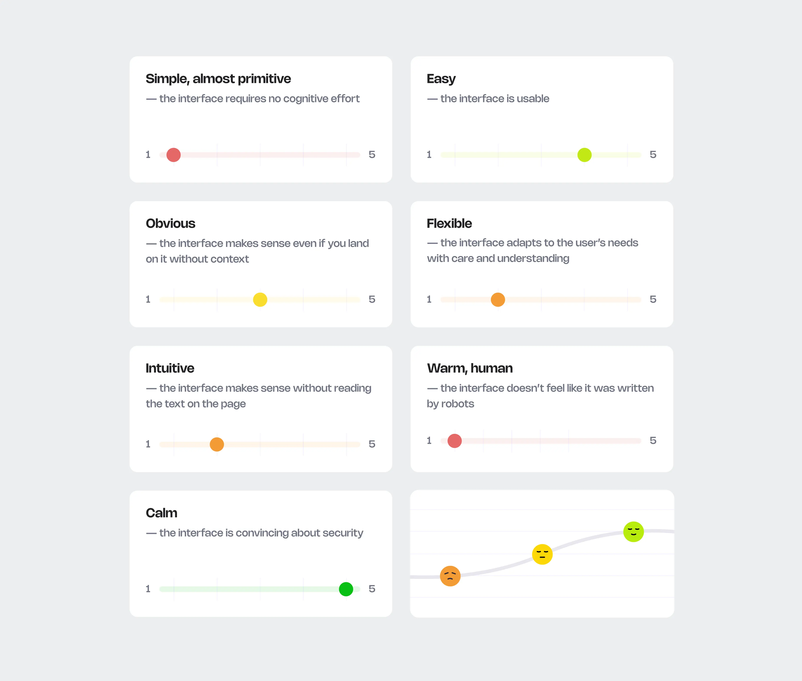
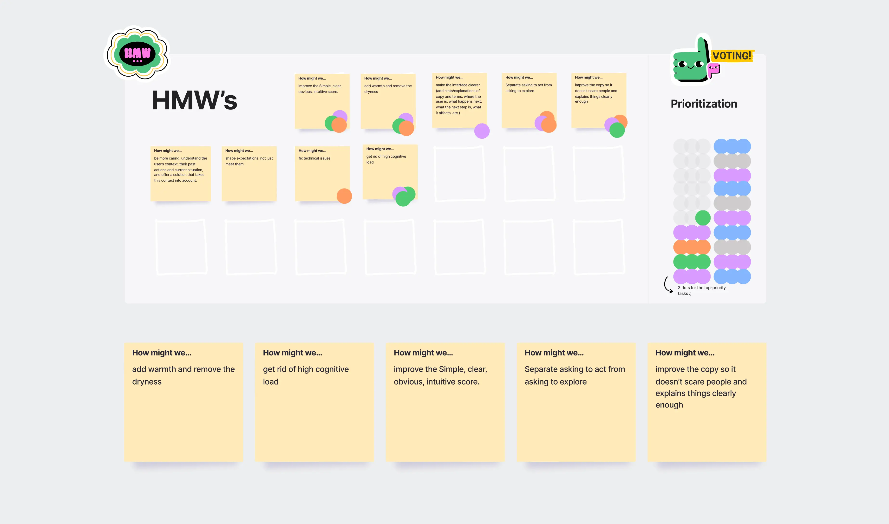
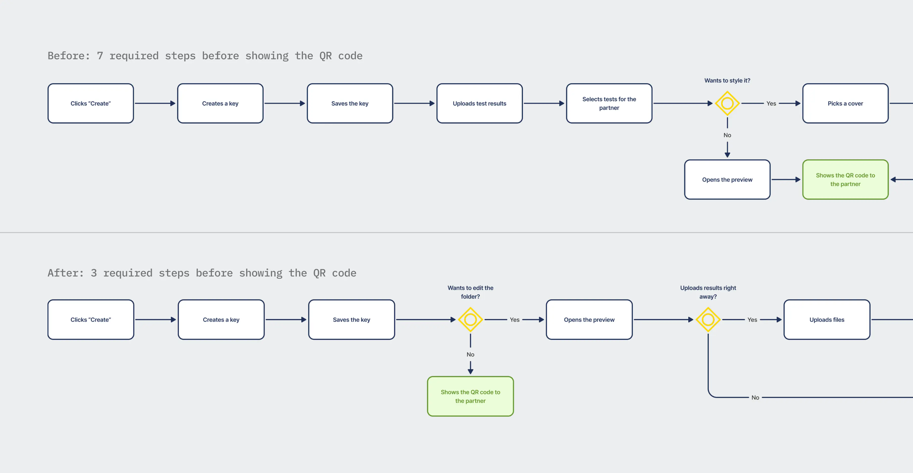
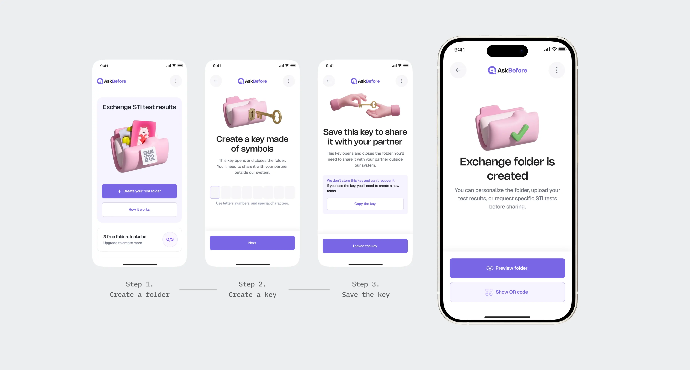
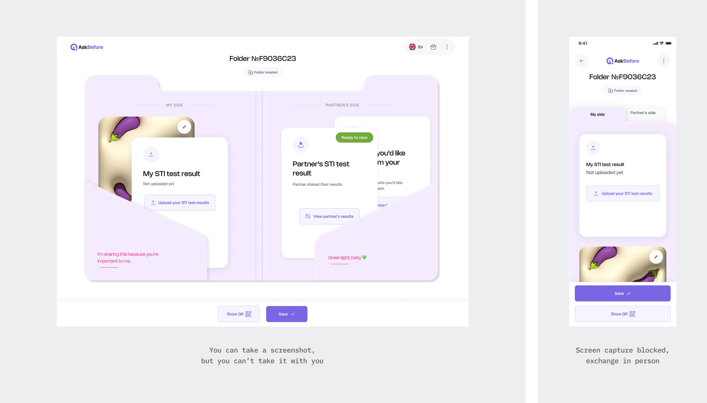
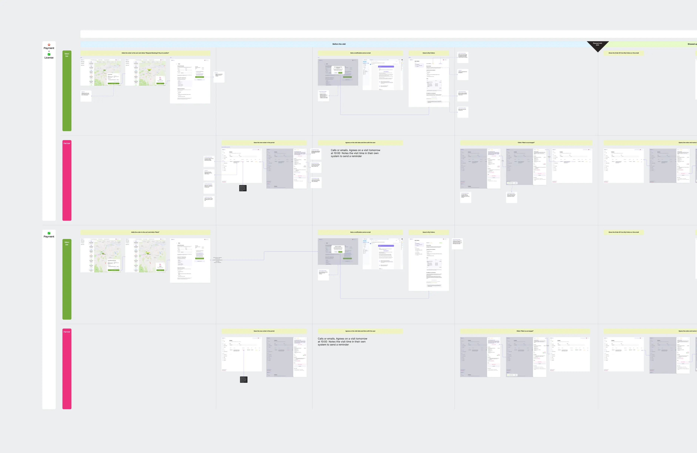
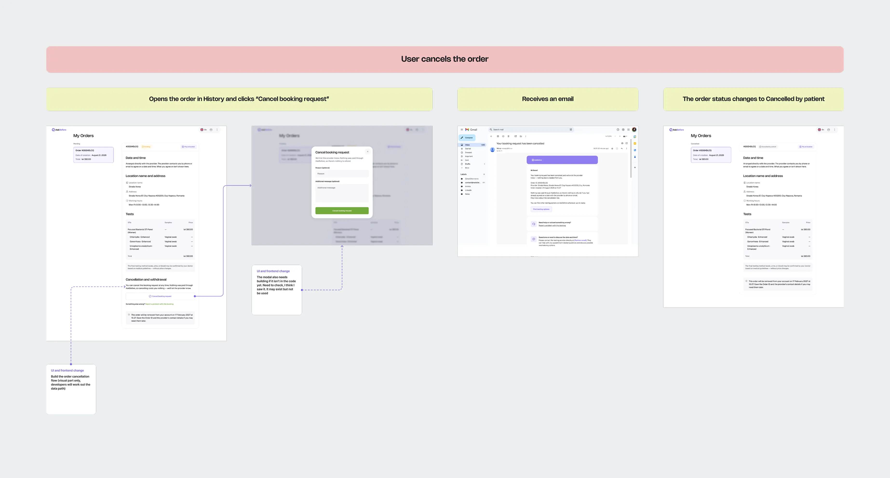
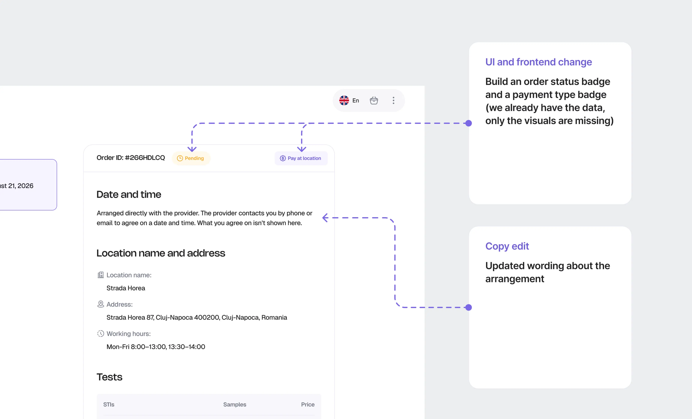

01
Aggregator — where to get tested
provider map,
filters,
booking
Results exchange is a product people didn’t have before. There is nothing to compare it to: no familiar entity, no known pattern. In testing, people opened a screen and didn’t understand where they were or what was expected of them.
I made the exchange clearer and shorter, made choosing in the aggregator more predictable, and moved the exchange scenario away from the medium where it broke.
Two products serve the user, and they don’t know about each other. You can use one for a year and never open the other.
Both products live in one domain: STI testing. People come here anxious, and this frames every decision. The cost of an interface mistake isn’t “inconvenient”. It’s a person losing control over their medical data.
01
provider map,
filters,
booking
02
folder with results,
key,
sharing with a partner
The exchange already had an MVP. The first version of the aggregator was designed by another designer on the team.
I continued work on both products: I designed the flows and interfaces and built them on the frontend. Product decisions were reviewed by the founder, who had previously worked as a senior designer and design lead.
I worked as a designer and design engineer: I designed the interface and took it to code myself. In the exchange, this let us test a new flow right inside the product. In the aggregator, it let me not only change screens but also connect shared data between them.
01
Legal compliance wasn’t enough to make privacy decisions. I had to account for stigma, fear of disclosure and expectations of anonymity
02
I made product decisions based on what data we can collect and store, on what legal basis we can use it and what protection it needs
03
Both products were already in production. I changed them inside the existing code instead of rebuilding them
In the aggregator, I could rely on familiar patterns: a map, a catalog, a cart. In the exchange, I had to explain the mechanics themselves: why you need a folder, who requests the results and what the recipient will see. So all the work here came down to one question: how do you make clear something a person has never seen before?
In testing, participants didn’t understand where they had landed, who was requesting results and what to do next.
I broke down the feedback: for every comment from the interviews, I wrote down what exactly broke for the person, on which screen and what they misunderstood. I watched all the recordings and put the sprint materials together with the product screens in one file.
We scored as a team. Five axes described usability, two more described tone: how the product explains security and how human it sounds. It was a working scale for the review, not a product metric.

“Simple” and “warm” got the lowest scores. In decisions, they sometimes conflicted: an extra explanation or visual touch supported the person but also asked for their attention.
The principle we chose: where they conflict, simplicity wins. Caring for the user here means, first of all, a clear path. We kept warmth where it doesn’t cost steps: we updated outdated illustrations and added onboarding to every part of the product.

Before, creating a folder took seven steps. Now it takes three: create, come up with a key, save it. After that, the folder already exists: you can preview it, show the QR code or come back to it later.
What changed is the moment of creation, not the feature set. Before, a person had to make every decision about the content first. Now uploading results, requesting results from another person and styling are edits to the folder. You can do them in any order, and they cost no steps.
We didn’t remove a single feature. We removed the need to go through all of them in a row to get a result.

I built the prototype directly in code, inside the product.
We invited the participant who had struggled most in the previous test and walked her through the new flow. One person isn’t a sample. It’s a worst-case check: if the flow doesn’t work for her, there’s nothing more to discuss.

These runs led to a conclusion that wasn’t in the brief: the exchange had to move to a mobile app.
The first reason is the pattern. Exchanging results is a conversation between two people, and a phone fits it: show and scan a QR code, look at the results.
The second is the option to restrict screen capture. A person shows someone else their medical documents, and on the web nothing can be done about it. A native app has a mechanism for this. It doesn’t solve the problem completely, but the difference between “impossible” and “inconvenient” matters here.

The app is in development now, led by the second designer. I set the transfer principle and handed over guidelines, she laid out the flows. I ran regular reviews and joined the design work on the hard parts.
The first version of the aggregator already had tests, packages and providers on the map. I took over when new selection criteria appeared. They had to fit in without turning the catalog into one long list of everything available.
Filters sat together with tests and packages in one shared selection block under the heading “Filters”. Neither the team nor the users could see the full picture: it was unclear what was being chosen and what only refined the choice.
I separated them by what they are. Tests and packages are the catalog: items a person takes. Filters are attributes of items already chosen: not what the person takes, but how one option differs from another.
The catalog stayed in the side column, and filters moved up into a row above the map.
This gave a rule for future changes: a new test goes into the catalog, a new search condition goes into filters. The split depends on the element’s role, not on where it’s easier to put it on the current screen.

The founder ran the provider negotiations. She brought data on how their offers differ, and I decided which differences become filters, where they sit and what they’re called in the interface.
For example, one test could be done with different methods, at different prices and with different turnaround times. That’s how the testing method filter appeared: basic or enhanced testing. Next to it came a price range and date and time selection.
Packages needed separate work on their composition and on how they connect across screens.

The first set came from a marketing hypothesis, built around situations in which a person might want to get tested. After talking to a clinic, we revised it: the provider grouped tests by a different logic.
At the same time, a package was described separately on the map, in the cart and in the partner portal. I turned it into one entity and defined which attributes each touchpoint needs.
On the frontend, I moved the package composition into one shared place that different surfaces used. The developer then connected the backend.
Provider negotiations brought a constraint: some clinics already manage appointments in their own system and aren’t ready to duplicate slots in ours. So booking through AskBefore became a separate setting that a provider can turn on or off.
The second axis is payment: through the platform or at the location. In the product, it depends on the provider’s plan and is independent of the booking setting.
Two axes give four configurations. For each, we have to explain to the person what they’re ordering, when they pay and how they’ll find out the appointment time. They don’t need to know the clinic’s internal setup for that.
In each configuration, an order can take different paths: the person shows up, shows up after the data retention period has ended, doesn’t show up, cancels the order or gets a cancellation from the provider.
I checked every path from both sides: what the user sees and which emails they get, what the provider sees in the portal and what action they need to take, and what state the order is in afterwards.
The set of scenarios depends on booking: providers without it have six, providers with it have eight, and each set runs in two payment options. One more branch differs for providers without a license. In total, there were twenty-nine scenarios to check. Not every one needs its own screen, but each needed defined behavior.
On one axis of the map, I placed the provider configurations, on the other, the order scenarios. Each cell shows what the user sees, what state the order is in, which emails go out and what the provider does.
This way I checked not only that the screens existed but also that the messages were consistent. For example, whether an email promises something the order doesn’t have, and whether the provider knows what’s expected of them.
The map was based on screens that already worked in the product: I took them from production. The paths between them for different configurations didn’t exist. I designed those from scratch, within the existing order model.

The provider has our booking turned off. Their offers stay on the map, but you can’t pick a slot through AskBefore. So the interface has to explain how the person will find out the appointment time.
I laid out the scenario for both sides. The provider gets a notification: contact the person, agree on a time, mark the arrangement in our system and add the appointment to their own.
Instead of picking a slot, the user sees that the clinic will contact them directly. The platform doesn’t receive the agreed time, so it won’t appear in the order. I stated this limitation in the interface too.

If picking a date and time right away matters to the person, they can use the filter on the map. Offers without booking through the platform then drop out of the results.
Booking defines how the person agrees on the time. The payment method defines which money-related actions are available through the platform.
For payment through AskBefore, I added a refund request branch: the user sends a request, and the provider reviews it on their side. A request doesn’t mean a refund yet. This configuration keeps order data longer, since it may be needed in a dispute.
For payment at the location, refunds through AskBefore aren’t available: the platform never took the payment. The person settles payment questions with the clinic directly, and the interface needs to say exactly that.

The map turned into field hints, banners, buttons, modals and emails. Similar elements could differ in copy and behavior: one configuration let you pick a time, another only let you send a request.
I checked them against one rule: if a limitation affects a person’s decision, they have to see it within the flow itself.
The principle is the same across all branches: where the product doesn’t know something, doesn’t control something or is about to do something with the person’s money, it says so. In a domain where people are already anxious, silence reads as a catch.
Take cancellation: people merge cancelling and refunding, so the idea “you cancel with us, the provider decides on the refund” appears three times: in the order block, in the modal and in a checkbox. Every cell of the map has a decision like this, specific to its branch.

What remained was to show how the two products live side by side. They share one entry point, but what’s available depends on the medium.
In the target setup, desktop and mobile browser keep the map and orders, and for the exchange the person goes to the app. Both scenarios are available in the app.
We decided not to support exchange on the web. This adds a barrier: without installing the app, a person can’t exchange results through AskBefore. We accepted this on purpose: here the medium affects not only convenience but also how much control the person has over their medical documents.
The map works both on the web and in the app. The products stay independent, and only the entry point is shared.

7 → 3
steps to create an exchange folder, no feature dropped
2
selection axes in the catalog: what you take and how it differs
1
package entity on the map, in the cart and in the partner portal
29
order scenarios on one map
We cut the required path for creating a folder from seven steps to three. The features stayed, but they’re no longer conditions for creation: you can fill and style the folder afterwards.
In the aggregator, I separated choosing a test from search conditions. For packages, I connected their views on different screens through a shared composition in code.
For orders, I designed branches for four payment and booking configurations. From the map, I derived states, messages and actions for the user and the provider.
I don’t have data on changes in conversion or completion rates. We tested the new exchange flow on a small sample: found problems, made fixes, tested again. The app is still in development, and its clarity and usability are yet to be evaluated.
I decided on the medium after the redesign, not before. We redesigned the desktop exchange, built a prototype, ran a user through it, and only that run showed the scenario isn’t a desktop one at all.
The question “which medium does this scenario live on?” should have come before drawing screens. Part of the interactions had to be designed again, this time for mobile.
The situation itself was a reason to consider the phone earlier. A person shows their medical documents to someone else, most often when that person is nearby. That’s a conversation with a phone in hand, and reason enough to test this option before detailing desktop screens.